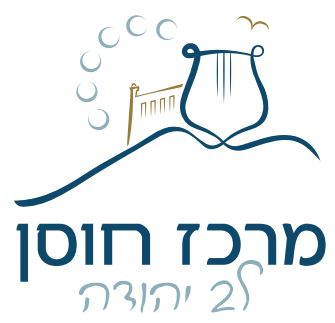

<div>מי אנחנו: מרכז חוסן יהודה פועל משנת 2017, מתוקף החלטת ממשלה ומתוקצב ע"י משרדי החינוך, הרווחה והבריאות. המרכז עובד בקרית ארבע-חברון ובמועצה אזורית הר חברון. המרכז הינו גוף מקצועי-ארגוני המאפשר לרשויות להיערך ולספק מענה לקהילה בשעת חירום ובמקביל לפתח ולחזק
    את חוסנה בתקופת רגיעה.
</div>